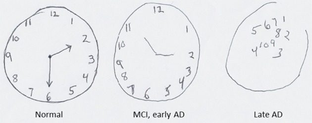

Para qué sirven
Los test cognitivos valoran de forma objetiva funciones como la memoria, la atención, el lenguaje, la orientación, las habilidades visuoespaciales y las funciones ejecutivas (planificar, razonar, cambiar de tarea). Ayudan a detectar un deterioro, a describir su perfil y a seguir su evolución.
Test breves
- MMSE (Mini-Mental): el más clásico; puntúa sobre 30.
- MoCA (Montreal Cognitive Assessment): más sensible para el deterioro cognitivo leve.
- Test del reloj: dibujar un reloj con una hora determinada.
- Fototest, Memory Impairment Screen y test de fluidez verbal (decir animales en un minuto).
Duran entre 5 y 15 minutos.
Evaluación neuropsicológica
La hace un neuropsicólogo y dura una o varias horas, con pruebas detalladas de cada función. Es útil en casos dudosos, en personas jóvenes o con un nivel educativo muy alto o muy bajo, antes de una cirugía de la epilepsia y para planificar la rehabilitación.
Lo que hay que saber
Un test no es un diagnóstico. El resultado depende de la edad, los años de escolarización, el idioma, la audición y la vista, el estado de ánimo y el cansancio. Una puntuación baja obliga a buscar la causa, que a veces es tratable (depresión, fármacos, falta de vitamina B12, hipotiroidismo).
Fuentes
- Nasreddine ZS, et al. The Montreal Cognitive Assessment, MoCA. J Am Geriatr Soc. 2005;53:695-9. doi:10.1111/j.1532-5415.2005.53221.x.
- Sociedad Española de Neurología. Guía oficial de práctica clínica en demencias.